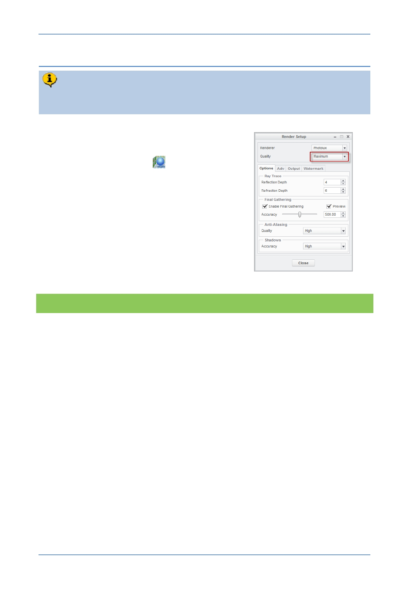

PTC Academic Program
Step 4: Render setup
Render setup contains many options including the quality of the image. You will
increase the quality from the default Draft setting to Maximum.
1. Render setup
From the Setup group of the Render tab,
start the Render Setup
tool.
In the Render Setup dialog, change the
Quality setting to Maximum .
Look at the options under each of the tabs to
see the wide range of settings Creo
Parametric provides.
Leave the other settings as defaults and
click Close .
What have you learned?
Render quality settings
Brief glimpse of available settings.
© 2012 PTC
Creo Parametric 2.0 Primer
Page 87